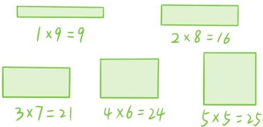
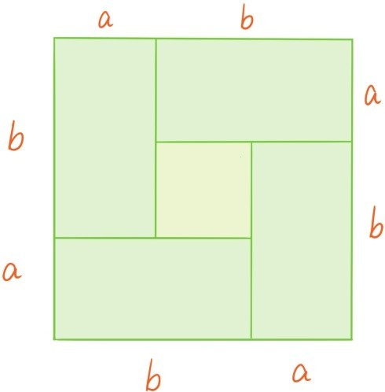

上节的完全平方公式可以推出基本不等式。在讲基本不等式之前，先来介绍关于不等式的表达方法和几个基本原则。
给定两个实数a和b，将a大于b记作a>b，这等于是说b小于a，记作b<a。例如4>0>-1，-10<-1<2，1.43923<1.43924。除了大于、小于这两种比较大小的关系外，在现实生活中人们还会经常使用另外两种比较大小的关系。父母经常对小孩说：如果你的期末数学成绩不低于90分，我就奖励你一个礼物。这里“不低于90分”表示你的数学成绩要等于90分，或者高于90分。超市打折商品出售时常常会限制单人购买的数量，比如要求每人限购3个。这里“限购3个”表示你一次性购买的打折商品的数量要小于3或者等于3。在数学中，我们引入大于等于符号“≥”和小于等于符号“≤”。a≥b表示a大于b或等于b，a≤b表示a小于b或等于b。例如4≤5，2≤2，-1≥-3，-3≥-3。运用到现实生活中，分数不低于90分就可以表达为：分数≥90，限购3个也可以表达为：打折商品购买数量≤3。我们将所有这些比较大小的表达式统称为不等式。
之前讲过，实数可以与数轴上的点建立完整的对应，使得右边的数总是大于左边的数，而将所有实数都加上一个固定的实数相当于是让整条数轴平移。但是平移并不改变左右关系，由此可以得到关于不等式的第一条基本原则：两个实数同时加上同一个实数，不改变大小关系。
将所有实数都乘以一个固定的正实数相当于是整条数轴做伸缩变换。但是伸缩变换也不改变左右关系，由此可以得到关于不等式的第二条基本原则：两个实数同时乘以同一个正实数，不改变大小关系。
将所有实数都乘以-1相当于是整条数轴做旋转180°变换，而这样的旋转变换是将左右调换，由此可以得到关于不等式的第三条基本原则：改变两个实数的符号会改变它们的大小关系。
我们将不等式的3条基本原则总结如下，其中a，b，c表示任何实数。
（1）若a>b，则a+c>b+c；
（2）若a>b且c>0，则ac>bc；
（3）若a>b，则-a<-b。
注意如果用≥和≤分别替换>和<，上面3个结论仍然成立。接下来开始讲基本不等式。基本不等式关联着这样的一种现实问题：
问题45：如果用一根长度固定的绳子围出一块长方形的土地，请问怎样才能围出最大的面积？
假设绳子的长度是20米，先尝试几种不同的围法：比较之后发现，围出正方形的土地面积最大。这时可能有人会问：

问题46：为什么用固定的绳子围方形土地，正方形的面积最大？
假设用这个绳子围出的一个长方形土地的长和宽分别是a和b，用同样的绳子围出的正方形边长就是。“用固定的绳子围方形土地，正方形的面积最大”表述成不等式的语言就是
并且等号成立当且仅当a=b。这是基本不等式的第一种形式。该如何说明这个不等式对于所有实数a和b都成立呢？将不等式两边同时乘以4后，只需说明(a+b)2≥4ab成立（下图给出这个不等式的一个几何解释）。

再将这个新的不等式两边同时减去4ab后，只需说明(a+b)2-4ab≥0。根据完全平方公式，最后这个不等式左边是等于
(a+b)2-4ab=a2+2ab+b2-4ab=a2-2ab+b2=(a-b)2。
(a-b)2自然是≥0，等号成立当且仅当a=b。如果将不等式
a2-2ab+b2=(a-b)2≥0
两边同时加上2ab，就会得到基本不等式的另一种形式
a2+b2≥2ab。
提问时间
3.5.1 给定4个正实数a，b，c，d，证明：若a>b，c>d，则ac>bd。
3.5.2 对于任何正实数a，b，证明：2(a2+b2)≥(a+b)2，这是基本不等式的第三种形式。
3.5.3 证明：若a>0，b>0，则a3+b3≥a2b+ab2。
3.5.4 对于任何正实数a，b，证明：8(a4+b4)≥(a+b)4。